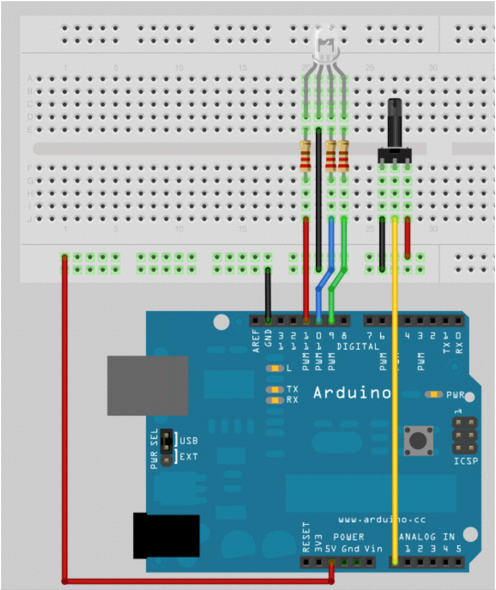
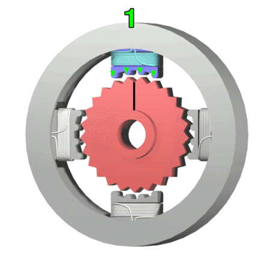

AAU:Physical Interactive Systems Day 3
AAU:Physical Interactive Systems Day 3
AAU:Physical Interactive Systems Day 3
AAU:Physical Interactive Systems Day 3
Slides are here:
https://mhellar.github.io/saam_mcu/day1
- Analog Input and Output
- Introduction to serial communication
- Controlling motion with servos and stepper motors
- Case study: RV (Room Vehicle) PROTOTYPE, Greg Lynn
- Sensors
Topics for Today:
Analog Input
Parts for this project:
- Solderless Breadboard
- 8 x Flexible Wire Jumpers
- 1 x RGB LED
- 3 x 220 Ohm Resistors
- 1 x Blue Potentiometer with white knob
- Arduino Duo board
- USB Cable
The Potentiometer

The Circuit
- Connect 5V and GND to the side strips
- Connect the short leads of the LED to pins 9,10,11 in series with a resistor.
Upload 'RBG_Pot.ino'


video
Upload 'SerialMath.ino'
int a = 5;
int b = 10;
int c = 20;
void setup() // run once, when the sketch starts
{
Serial.begin(9600); // set up Serial library at 9600 bps
Serial.println("Here is some math: ");
Serial.print("a = ");
Serial.println(a);
Serial.print("b = ");
Serial.println(b);
Serial.print("c = ");
Serial.println(c);
Serial.print("a + b = "); // add
Serial.println(a + b);
Serial.print("a * c = "); // multiply
Serial.println(a * c);
Serial.print("c / b = "); // divide
Serial.println(c / b);
Serial.print("b - c = "); // subtract
Serial.println(b - c);
}
void loop() // we need this to be here even though its empty
{
}
WE can send Serial data as well
Upload PhysicalPixel.ino
const int redPin = 9; // the pin that the LED is attached to
const int bluePin = 10; // the pin that the LED is attached to
const int greenPin = 11; // the pin that the LED is attached to
int incomingByte; // a variable to read incoming serial data into
void setup() {
// initialize serial communication:
Serial.begin(9600);
// initialize the LED pin as an output:
pinMode(redPin, OUTPUT);
pinMode(bluePin, OUTPUT);
pinMode(greenPin, OUTPUT);
}
void loop() {
// see if there's incoming serial data:
if (Serial.available() > 0) {
// read the oldest byte in the serial buffer:
incomingByte = Serial.read();
// if it's a r , turn on the red LED:
if (incomingByte == 'r') {
digitalWrite(greenPin, LOW);
digitalWrite(bluePin, LOW);
digitalWrite(redPin, HIGH);
}
// if it's a g , turn on the green LED:
if (incomingByte == 'g') {
digitalWrite(greenPin, HIGH);
digitalWrite(bluePin, LOW);
digitalWrite(redPin, LOW);
}
/ if it's a b , turn on the blue LED:
if (incomingByte == 'b') {
digitalWrite(greenPin, LOW);
digitalWrite(bluePin, HIGH);
digitalWrite(redPin, LOW);
}
}
}
Controlling a Servo

Servo_Sweep.ino
#include
Servo myservo; // create servo object to control a servo
// a maximum of eight servo objects can be created
int pos = 0; // variable to store the servo position
void setup() {
myservo.attach(9); // attaches the servo on pin 9 to the servo object }
void loop() {
for(pos = 0; pos < 180; pos += 1) // goes from 0 degrees to 180 degrees
}
{ myservo.write(pos); delay(15);
// in steps of 1 degree
// tell servo to go to position in variable 'pos'
// waits 15ms for the servo to reach the position
}
for(pos = 180; pos>=1; pos-=1) // goes from 180 degrees to 0 degrees
{
myservo.write(pos); // tell servo to go to position in variable 'pos'
delay(15); // waits 15ms for the servo to reach the position
}
Servo With Potentiometer

Upload SERVO_KNOB.INO
try SerialServoControl
Stepper Motors
Stepper Motors
Stepper Motors

Upload 'Stepper.ino'
Worth a look
Accelstepper

Adafruit
Sparkfun
DFRobot
Seeed Studios

The HC-SR04 ultrasonic sensor uses sonar to determine distance to an object like bats do. It offers excellent non-contact range detection with high accuracy and stable readings in an easy-to-use package. From 2cm to 400 cm or 1” to 13 feet. It operation is not affected by sunlight or black material like Sharp rangefinders are (although acoustically soft materials like cloth can be difficult to detect). It comes complete with ultrasonic transmitter and receiver module.

Upload the Arduino sketch in hc-04-code/hc-04 and then check the output in the serial monitor
- Close the serial monitor and open the serial plotter from te tools menu
- Run Sensortest from the Examples adxl345_plotter
ADXL354 accelerometer
An accelerometer is an electromechanical device that will measure acceleration forces. These forces may be static, like the constant force of gravity pulling at your feet, or they could be dynamic - caused by moving or vibrating the accelerometer.By measuring the amount of static acceleration due to gravity, you can find out the angle the device is tilted at with respect to the earth. By sensing the amount of dynamic acceleration, you can analyze the way the device is moving.
ADXL354 accelerometer

- Connect
- GND to GND
- 3v to 3v
- SCL to A5
- SDA to A4
- Open the Library Manager in Arduino
- Install Adafruit ADXL Library
- Install Adafruit Universal Sensor Library
- Run Sensortest from the Examples
- To plot multiple values in the serial potter we seperate them with a space
- Run Sensortest from the Examples adxl345_plotter